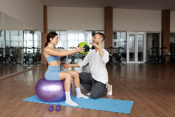
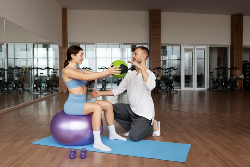

Ventajas de asistir al Kinesiologo y al Quiropractico
La kinesiología es mucho más que una solución para el dolor cervical. Se ocupa de mejorar y mantener la capacidad psicomotora, y también de prevenir alteraciones físicas a través del trabajo sobre el movimiento.La formación especializada del kinesiólogo le permite intervenir en la recuperación y rehabilitación psicomotora mediante la aplicación de masajes con técnicas específicas y la educación del paciente.

 
